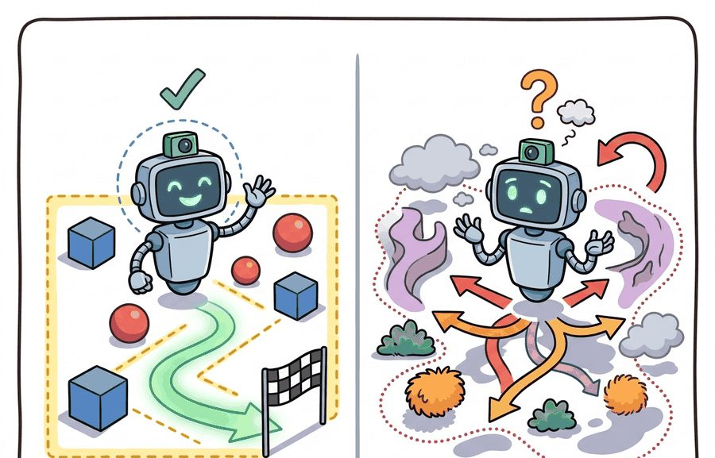
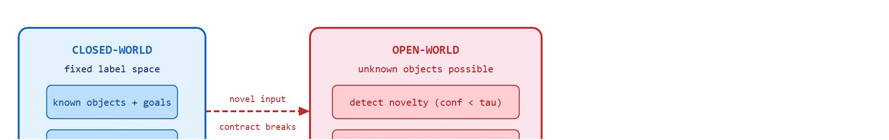

A closed-world benchmark is a tidy kitchen; deployment is the drawer where somebody put batteries, tape, and one mysterious screw.
A Junk Drawer Deployment

Figure 51.1A: Closed-world tasks (a fixed set of objects, instructions, and goals) vs. open-world tasks (novel objects encountered at test time), with a benchmark suite axis showing how evaluation protocols change across the two settings.
This section assumes familiarity with the agent-environment boundary and partial observability introduced in section 2.7, and with distribution shift as covered in section 20.1. The distinction drawn here between closed- and open-world contracts is extended directly in section 51.2 (novel objects and instructions) and section 51.5 (novelty detection and graceful degradation), where the abstention mechanism introduced below is operationalized into a full recovery pipeline.
Big Picture
A warehouse robot trained on ten thousand labeled SKUs (stock-keeping units, the distinct product identifiers a warehouse tracks) freezes when a supplier changes packaging: same product, unfamiliar barcode, and the system has no category for it. This single gap between benchmark and reality is why the closed- vs. open-world distinction is the foundational safety question for deployed embodied AI. As robots move out of controlled testbeds into homes, hospitals, and supply chains, the set of things they must handle keeps growing after training ends. This section develops the tools to characterize that contract precisely, identify the moment it breaks, and build the detection and abstention mechanisms that keep a system safe when it does.
Hand a 95%-accurate sorting robot a translucent water bottle it has never seen, and it will not hesitate, pause, or ask. It will confidently call the bottle a coffee mug and clamp down on it. Nothing in its training ever taught it that "I do not recognize this" is a legal output. As Figure 51.1A contrasts, a closed-world task fixes the set of objects, instructions, and goals, while an open-world task admits novel objects at test time and changes the evaluation protocol accordingly. The distinction between closed-world and open-world tasks matters because it determines what the robot is allowed to assume at test time. In plain terms: a task is closed-world if every object, instruction, and goal the system will ever see at test time was also present, in some form, during training; it is open-world if the system must handle at least one of those categories appearing for the first time after training ends.In a closed-world benchmark, the set of objects, instructions, and goals is sealed. The robot can treat any observation as one of the known categories, and high accuracy proves competence. In deployment, that contract breaks the moment a user hands the robot an object it has never seen, or gives an instruction that uses a word outside the training vocabulary. Without a principled way to detect and respond to that breach, a system that scores 95% on the benchmark can fail completely on the first novel interaction. Understanding when a robot is operating inside versus outside its training contract is therefore the first safety question, not an advanced one. Reasoning about what the agent can and cannot observe at any moment is the core problem of partial observability. Figure 51.1B traces what happens to the training contract when it crosses from a closed-world benchmark into open-world deployment.

Figure 51.1B: The training contract in a closed-world benchmark (left, blue) seals the label space so any observation maps to a known category and accuracy equals competence. A novel input (dashed red arrow) breaks that contract in open-world deployment (right, pink), where the safe response is to detect low confidence (conf below tau), abstain, and query the operator rather than act.
A robot that cannot refuse to act is not a robust system; it is a confident mistake waiting for the right novel object.
A common assumption is that high benchmark accuracy means a robot is reliable in deployment. This is wrong. Benchmark accuracy measures performance only within the fixed label space from training. It says nothing about what the system does when an observation falls outside that space. A classifier that is 94% accurate on 50 known categories will still assign one of those labels to every novel object it sees. It produces confident, incorrect outputs instead of a safe refusal. Closed-world accuracy and open-world competence are orthogonal properties. A system must separately demonstrate that it detects out-of-distribution inputs (observations drawn from a distribution the model was not trained on, here objects outside the fixed label space) and executes a safe fallback before its benchmark score has any bearing on deployment safety.
The key question is practical: What is fixed by the benchmark, what may change in deployment, and what evidence proves recovery rather than memorization? The scale of the gap is striking: in representative closed-set evaluations (as of 2024), a ResNet classifier tested on its 50 training categories achieves 94% accuracy; confronted with just 5 unseen categories mixed into the test stream, that same model drops to roughly 61% while remaining confidently wrong on the majority of its errors. The fix is not a bigger model but an explicit novelty gate, a confidence threshold that converts silent failures into actionable abstentions. Without the gate, detecting that the calibration has drifted typically requires accumulating on the order of tens of thousands of deployment episodes before the error rate rises above noise (illustrative figures; the exact count depends on deployment volume and drift rate); with a calibrated threshold in place, on the order of a few hundred operator-confirmed interactions is typically enough to flag drift and trigger a recalibration pass.
Action Is The Test
A representation earns its place when it changes the measurable action interface. In closed- vs. open-world tasks, the reader should keep asking which decision becomes easier, safer, or more reliable.
Theory
Turning that safety question into engineering practice starts with one demand. The contract that just broke must be something you can read off a log line. That is why the design rule below makes every signal in the loop explicit. The design rule for an open-world pick cell makes the perception-to-action contract inspectable before any model tuning. One logged episode artifact (a ROS 2 bag or LeRobot dataset shard) must show all of the following: the wrist-camera RGB frame (the observation), the softmax distribution over the 50 Open X-Embodiment categories plus its max-confidence scalar (the gated signal), the 6-DoF grasp pose the policy would command (the action; 6-DoF meaning six degrees of freedom, the three position and three orientation coordinates that fully specify where and how the gripper meets the object), the 30 cm standoff fallback (the abstention), and the recorded failure label. On a Franka Panda this is not bookkeeping: if the confidence scalar is not in the log next to the commanded grasp, you cannot later prove whether a shattered beaker came from a miscalibrated threshold or a kinematics error.
Mechanism
The mechanism is the contract between the ResNet-50 confidence head and the Panda's motion controller. What enters: a temperature-scaled softmax over known SKUs. What leaves: either descend_and_grasp or hold_at_standoff_query_operator. The assumption that makes the transformation valid: the calibration split (300 held-out Open X-Embodiment frames) still matches the deployment distribution. The log that reveals a bad handoff: per-episode max-confidence paired with the eventual operator label, so silent calibration drift shows up as rising abstention on objects that were once known.
Checkpoint
So far: an open-world pick cell must log four things together in one artifact, the observation (camera frame), the gated signal (confidence over known categories), the action (the grasp pose or the standoff fallback), and the failure label, because the contract between the confidence head and the motion controller can only be debugged if all four are visible on the same log line.
Worked Example
To see that abstract confidence-to-controller handoff become real hardware, ground it in a specific arm with specific numbers. Consider a Franka Panda pick-and-place cell trained on 50 household objects from the Open X-Embodiment dataset. A ResNet-50 vision head classifies each object before the gripper descends; if confidence is below a calibrated threshold, the arm holds position and asks for human confirmation instead of executing a potentially damaging grasp. The calibrated threshold is produced by temperature scaling, a one-parameter rescaling of the classifier's raw confidence so that a reported 0.7 actually corresponds to roughly 70% real accuracy; the mechanics are worked through in full after the example below, but the short version is that it changes how trustworthy a confidence number is, not which class the model prefers. The snippet below reproduces the novelty gate at inference time, using confidence scores that mirror the translucent-bottle failure mode described above.
# Novelty gate for a Franka Panda pick cell.# Confidence scores come from a temperature-scaled ResNet-50# head (T=1.8, calibrated on 300 held-out Open X-Embodiment examples).# ECE dropped from 0.14 to 0.03 after calibration.TAU=0.70# abstention threshold; set via netcal TemperatureScalingobject_observations=[{"label":"known_mug","conf":0.91},{"label":"translucent_bottle","conf":0.42},{"label":"novel_container","conf":0.38},]forobsinobject_observations:ifobs["conf"]>=TAU:action="descend_and_grasp"else:# Arm stays at 30 cm standoff; wrist camera records for human review.action="hold_at_standoff_query_operator"print(f'{obs["label"]:25s} conf={obs["conf"]:.2f} -> {action}')
Code Fragment 51.1.1: The novelty gate on a Franka Panda pick cell, iterating over three observations and comparing each temperature-scaled max-confidence against TAU=0.70. Confidence below TAU prevents a descent command; the arm waits at standoff while the wrist camera streams a frame to the operator. On real hardware a missed grasp at 1 m/s fingertip speed can exert over 40 N on a fragile object, so abstaining on low confidence is a physical safety measure, not a UX nicety.
Library Shortcut
To replicate this gate in a full pipeline: use (netcal, an open-source Python package for confidence calibration)'s TemperatureScaling fitted on 200 to 500 known-object frames from the LeRobot lerobot/pusht or Open X-Embodiment (a large, multi-robot, multi-task manipulation dataset used throughout this book for training and calibration examples) splits, then evaluate ECE (Expected Calibration Error, the average gap between a model's reported confidence and its actual accuracy) before deploying the threshold to hardware. For MuJoCo-based testing, inject a novel object mesh and verify the gate fires before running on a physical Panda arm.
Step-Through: Temperature scaling then novelty gate
Trace the full detect-and-abstain pipeline with one translucent-bottle frame, using actual numbers. The ResNet-50 head emits three raw logits for the top classes: cup = 4.0, bottle = 3.6, jar = 2.1. (1) Raw softmax with denominator $e^{4.0}+e^{3.6}+e^{2.1} = 54.60 + 36.60 + 8.17 = 99.37$ gives $p_\text{cup} = 54.60/99.37 = 0.55$. An uncalibrated threshold of 0.70 would already abstain here, but only by luck: the same head is wildly overconfident on truly known objects, so 0.70 on raw scores lets many novel items through. (2) Apply the calibrated temperature $T = 1.8$: divide every logit, giving 2.22, 2.00, 1.17. (3) Recompute softmax: $e^{2.22}+e^{2.00}+e^{1.17} = 9.21 + 7.39 + 3.22 = 15.82$, so $p_\text{cup} = 9.21/15.82 = 0.58$, $p_\text{bottle} = 7.39/15.82 = 0.47$, $p_\text{jar} = 3.22/15.82 = 0.20$. The maximum calibrated confidence is 0.58. (4) Gate: $0.58 < \tau = 0.70$, so the action is hold_at_standoff_query_operator. Note that temperature scaling did not reorder the classes (cup still ranks first); it only made the 0.58 trustworthy enough to compare against a calibrated threshold.
Real-World Application: warehouse fulfillment
Large-scale robotic fulfillment stations, such as those Amazon has publicly described, face exactly this closed-to-open-world boundary when suppliers change packaging or new SKUs arrive mid-shift. Publicly available descriptions of such systems suggest that stow and pick pipelines typically pair a learned grasp-confidence score with an abstention path that routes uncertain items to a human associate rather than risking a damaging or dropped grasp; the exact thresholds and architecture are proprietary and not verifiable from outside the company. The same detect-then-defer contract described here is, in practice, what would keep throughput high without forcing a full retrain every time the catalog shifts.
Practical Recipe
Write the observation, action, and success metric before choosing a model.
Build a baseline that is simple enough to debug by inspection.
Add the library implementation only after the baseline behavior is understood.
Record failures as structured cases: perception error, state error, planning error, control error, or evaluation error.
Run at least one perturbation test before trusting the result.
Common Failure Mode
The common mistake in Closed- vs. open-world tasks is to celebrate the component score before checking the closed-loop handoff. The failure usually appears at the boundary: stale state, wrong frame, delayed action, saturated actuator, or metric that ignores the real task cost.
Practical Example
An open-world evaluation should save the known-task score, novelty type, detection signal, adaptation action, retained old-task score, and failure label in one artifact.
Research Frontier
Direction 1: Language-conditioned open-world manipulation. Foundation models that combine vision, language, and action are being scaled to handle novel object categories and underspecified instructions without retraining. OpenVLA (Kim et al., 2024, Stanford) shows that a 7B-parameter vision-language-action model fine-tuned on Open X-Embodiment data can follow natural-language instructions for objects and tasks unseen during pretraining, beating prior specialist policies on 29 of 35 BridgeData V2 tasks.
Direction 2: Test-time adaptation for closed-to-open-world transfer. Rather than retraining after encountering novelty, 2024-2025 work adapts model parameters or retrieval indices online within a single deployment episode. GROOT (Wang et al., 2024, UMass) demonstrates that a robot can use a small set of goal images observed at test time to construct a task representation and execute long-horizon manipulation of completely novel objects, with no gradient update required.
Direction 3: Uncertainty-aware continual learning with formal guarantees. Combining conformal prediction (a statistical method that turns a model's raw confidence scores into prediction sets with a guaranteed, distribution-free coverage rate, e.g. "the true label is in this set 95% of the time") with continual learning to give statistically valid coverage guarantees as the task distribution shifts is an active 2025 direction. The Stanford IRIS lab and CMU Robot Learning Lab have both published preliminary results showing that conformal novelty scores can replace hand-tuned thresholds and maintain coverage guarantees across task shifts without access to test labels.
Open problem for PhD research: Current novelty-gate thresholds are calibrated offline on a fixed held-out split. When the deployment distribution drifts gradually (seasonal change in a warehouse, new product lines introduced weekly), the calibration split becomes stale and coverage guarantees erode silently. No published method yet provides an online recalibration protocol that (a) detects drift in the calibration set itself, (b) updates the threshold without requiring labeled novel examples, and (c) proves that the false-alarm rate stays bounded throughout. Formalizing and solving this problem for a single robot domain would close a critical safety gap between closed-world benchmarks and real deployment.
Self Check
Can you name the observation, state estimate, action, success metric, and most likely failure mode for closed- vs. open-world tasks? If not, the system boundary is still too vague.
Closed- vs. open-world tasks becomes useful when it is tied to a closed-loop contract for Open-World and Novelty-Robust Embodiment. The contract names the participants, observations, action authority, timing budget, logging artifact, and recovery rule. Without that contract, a system can look capable in a notebook while failing the first time a partner delays, a person corrects it, or a deployment scene changes.
For Closed- vs. open-world tasks, separate the conceptual claim, the systems claim, and the evidence claim. A plausible mechanism, a clean interface, and a closed-loop result are different claims; the section should keep their evidence separate.
Practical Tool Choices For This Section
Tool or Library
Role in the Topic
Builder Advice
Gymnasium
Closed- vs. open-world tasks
Create controlled shifts that separate closed-world competence from open-world recovery.
LeRobot
Closed- vs. open-world tasks
Reuse recorded robot episodes for replay, adaptation, and regression checks.
ROS 2
Closed- vs. open-world tasks
Log deployment events and safety interventions while the environment changes.
MuJoCo
Closed- vs. open-world tasks
Inject object, contact, and dynamics variation before real deployment.
PettingZoo
Closed- vs. open-world tasks
Model open-world interaction when other agents create changing goals or hazards.
For Closed- vs. open-world tasks, the baseline and maintained-tool version should produce the same artifact schema and run on one task panel. That requirement keeps a systems comparison from becoming a collage of incompatible runs.
Write a one-paragraph task contract with observation, action, success, and failure fields.
Start with the smallest simulator, dataset, or wrapper that exposes the task contract faithfully.
Run one deterministic smoke test and one perturbation test before scaling.
Save a single result artifact containing configuration, seed, metrics, videos or traces, and failure labels.
Compare methods only when one script evaluates them on the same task panel.
When a closed- vs. open-world task fails, do not label the whole method as weak. Assign the failure to one stage first: perception, communication, human input, memory, planning, control, timing, data coverage, safety, or evaluation. Then rerun one perturbation that isolates the suspected cause. This turns a disappointing rollout into a reusable diagnostic.
Agent Checklist Applied
The 42-agent production pass treats closed- vs. open-world tasks as a buildable system, not a definition. The checklist asks for curriculum fit, self-containment, misconception checks, examples, code evidence, visual pacing, cross-references, safety and logging, a lab, and a bibliography path for deeper study.
Cross-Reference Trail
For Closed- vs. open-world tasks, connect partial observability, exploration, memory, robustness, and evaluation through a lifelong-learning log that records what changed and how the robot noticed.
Misconception Check
A common misconception is that a larger training set automatically makes the task open-world. The diagnostic question is: what does the agent do when it knows it does not know?
Mini Lab
Build a two-panel evaluation: one familiar object and one shifted object. Report success, novelty flag, fallback action, and old-task retention together.
Memory Hook
A closed-world benchmark is a tidy kitchen; deployment is the drawer where somebody put batteries, tape, and one mysterious screw.
Technical Core
Closed- vs. open-world tasks needs a topic-native core: variables, equations or system contracts, an algorithmic procedure, an expected output, and a failure diagnosis. Figure 51.1.T summarizes the chain this section must preserve when moving from a teaching example to a real embodied system.
Figure 51.1.T: A claim is only as trustworthy as the weakest link in this chain: stated assumptions constrain the model, the model fixes the algorithm, the algorithm must produce logged evidence, and an unexplained failure mode invalidates the result no matter how high the success score reads.
Formal Object
$f_\theta(o)\to (\hat y,\hat p),\quad \text{act if } \max_k \hat p_k \ge \tau,\quad \text{otherwise abstain and query}$
The defining difference between closed-world and open-world tasks is not model size, it is the right to abstain. In a closed-world benchmark the label space and task graph are fixed. In open-world embodiment the agent must detect when the current observation lies outside that contract and choose a safe fallback.
Consider a specific case: a pick-and-place robot is trained on 50 household objects with a ResNet classifier. At test time it encounters a translucent water bottle. The softmax output assigns 0.38 to "cup", 0.31 to "bottle", and spreads the rest across other classes; no single class clears the 0.70 threshold. That low-confidence signature is the novelty signal. The robot does not guess; it switches to an abstention action, verbally reports "unfamiliar object," and waits for a human label or a fallback grasp strategy. One interaction later, the label is recorded and the threshold is re-evaluated on the updated calibration set. This three-step loop, detect, abstain, and update, is the operational definition of open-world competence.
Open-set action gate
Train the base policy on the known task set, then calibrate confidence on held-out known data.
Create novelty panels with unseen objects, scene layouts, instructions, and interaction partners.
Choose a threshold $\tau$ that balances false alarms against unsafe confident errors.
Define the abstention action: ask, slow down, hand off, or switch to exploration mode.
Closed-World Success Versus Open-World Competence
Evaluation Item
Closed-World Reading
Open-World Reading
High success rate
Policy solves the benchmark.
Only meaningful if novelty detection is also measured.
Confidence score
Convenient ranking statistic.
Launch gate for safe action or abstention.
Replay trace
Debugging artifact.
Evidence for recovery after distribution shift.
Failure
One more bad episode.
Potential proof that the task contract was violated.
# Decide whether to act or abstain.confidence={"known_mug":0.91,"unknown_object":0.42}threshold=0.70foritem,scoreinconfidence.items():decision="act"ifscore>=thresholdelse"query_or_fallback"print(item,score,decision)
Code Fragment 51.1.T: a minimal two-item act-or-abstain gate over a confidence dictionary, mapping each score to act or query_or_fallback against a fixed 0.70 threshold. It captures the core open-world move: the policy must sometimes refuse to pretend the benchmark still applies.
The threshold tau used in the action gate above should be set by post-hoc temperature scaling on a held-out calibration split, not tuned by hand on the test set. Use the netcal library's TemperatureScaling class: fit it on 200 to 500 known-object examples held out from training, then read the ECE (Expected Calibration Error) before and after. A raw ResNet softmax is systematically overconfident, so an uncalibrated threshold of 0.70 typically passes far more novel objects than intended; after temperature scaling the same threshold is meaningful. Never share the calibration split with the novelty panels used for evaluation, because overlap lets overconfident predictions appear calibrated when they are not.
A miscalibrated threshold matters in embodied AI because the cost of overconfidence is physical: a gripper that descends on a misidentified object can shatter glassware, jam a joint, or trigger an emergency stop that halts an entire production line. Benchmark accuracy cannot catch this because the benchmark never measures what the system does when it is wrong and certain simultaneously. Calibration converts a latent failure mode into a detectable signal.
Temperature scaling works by fitting a single scalar $T$ on held-out known-class examples: the raw logits are divided by $T$ before the softmax, which flattens or sharpens the probability mass without reordering predictions. When $T > 1$ the distribution flattens, reducing overconfidence. The value of $T$ is chosen to minimize Expected Calibration Error on the held-out split, after which the threshold $\tau$ can be set with a known false-alarm rate rather than a guess.
Think of temperature scaling as adjusting the heat under a pot of soup: a flame turned too high boils everything into one violent bubble (the model is overconfident, assigning nearly all probability mass to one label). Turning the heat down to a gentle simmer lets distinct flavors separate and become individually tasteable (the probability mass spreads across plausible labels in proportion to genuine evidence). The scalar $T$ is simply the knob on the stove. Crucially, lowering the heat does not change which ingredient is most prominent; it only makes the differences between ingredients easier to distinguish, which is why temperature scaling never reorders the model's predictions but does make the confidence scores honest enough to act on.
The second line is the one readers should remember. Open-world embodiment is not defined by solving new cases immediately; it is defined by detecting that a new case arrived and choosing a controllable recovery path rather than an overconfident action.
Failure Mode To Test
An open-world system fails when confidence is reported but never connected to action gating. Always test whether low confidence changes behavior, because a detector that does not alter control is only a dashboard ornament.
Project Ideas
Beginner (weekend): Build a novelty-gate wrapper around a Gymnasium FrozenLake or CartPole environment: train a small MLP policy on a fixed set of starting conditions, then inject one unseen start state and log whether confidence falls below a threshold before any action is taken. The key challenge is calibrating the threshold so the gate fires on genuinely out-of-distribution states without triggering on normal variance in known states.
Intermediate (1 to 2 weeks): In MuJoCo or PyBullet, set up a tabletop pick-and-place task using a fixed set of object meshes from the YCB dataset, train a ResNet or small ViT (Vision Transformer) classifier with temperature scaling via netcal, then swap in two novel meshes at test time and measure abstention rate, false-alarm rate, and retained success on known objects in a single evaluation pass logged with LeRobot or a ROS2 bag. The key challenge is keeping the evaluation pipeline honest so that known-object retention and novelty detection are measured in the same rollout rather than separate experiments.
Advanced (2 to 4 weeks): Extend the MuJoCo pick cell above into a lightweight continual-learning loop using Isaac Lab: after each operator-confirmed novel object, fine-tune only the classifier head with EWC (Elastic Weight Consolidation) regularization, re-evaluate the full panel, and save a structured artifact per round containing configuration, seed, metrics, and failure labels. The key challenge is preventing catastrophic forgetting on the original 50 categories while the new-object accuracy rises.
Key Takeaway
Closed-world competence is the baseline; open-world embodiment is measured by detection, recovery, and retained skill.
Exercise 51.1.1
Design a method-matched experiment for Closed- vs. open-world tasks. Specify the environment, observation schema, action interface, metric, and one perturbation that targets the section's core assumption.
Section References
Parisi, G. I. et al. Continual Lifelong Learning with Neural Networks: A Review. Neural Networks, 2019.
Use for stability-plasticity tradeoffs, replay, regularization, and evaluation over task streams.
Kirkpatrick, J. et al. Overcoming catastrophic forgetting in neural networks. PNAS, 2017.
Use for elastic weight consolidation and the limits of parameter-importance methods.